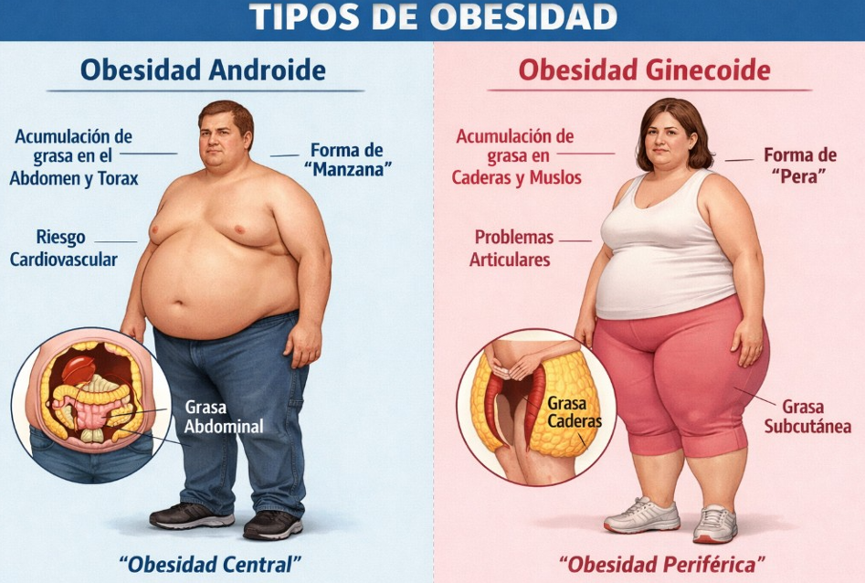

Identificador de Fenotipo
de Síndrome de Ovario Poliquístico y Salud Metabólica
Herramienta diseñada para identificar el fenotipo de SOP, evaluar salud metabólica y orientar decisiones clínicas y nutricionales de forma estructurada.
El Síndrome de Ovario Poliquístico (SOP) es un trastorno endocrino–metabólico crónico y complejo que afecta principalmente a mujeres en edad reproductiva.
En México, su prevalencia varía: estimaciones conservadoras lo sitúan en 6 %, pero estudios recientes elevan la cifra a 21–22 %.
De acuerdo con los criterios de Rotterdam (2003), se requieren 2 de 3 criterios para el diagnóstico de SOP y asignación de fenotipo.
A nivel global, afecta entre 6 % y 13 %.
Fenotipo A (Alteraciones menstruales y/o amenorrea + Hiperandrogenismo + Ovarios poliquísticos)
- Es el más severo: cumple los 3 criterios.
- Mayor riesgo de resistencia a la insulina, síndrome metabólico y obesidad central.
- Elevada prevalencia de dislipidemias (↑ triglicéridos, ↓ HDL).
- Mayor riesgo de infertilidad y ciclos anovulatorios persistentes.
- Alta carga de síntomas visibles: acné, hirsutismo, alopecia androgénica.
- Mayor inflamación sistémica y riesgo cardiovascular.
Fenotipo B (Alteraciones menstruales y/o amenorrea + Hiperandrogenismo)
- Similar al fenotipo A pero sin morfología poliquística en ultrasonido.
- Elevado riesgo metabólico y resistencia a la insulina.
- Síntomas severos de hiperandrogenismo.
- Riesgo aumentado de infertilidad.
- Perfil lipídico con mayor probabilidad de alteración.
Fenotipo C (Hiperandrogenismo + Ovarios poliquísticos)
- Fenotipo ovulatorio (ciclos regulares).
- Riesgo metabólico intermedio.
- Síntomas de hiperandrogenismo presentes.
- Riesgo moderado de alteraciones glucémicas.
- Mejor pronóstico reproductivo que A y B.
Fenotipo D (Alteraciones menstruales y/o amenorrea + Ovarios poliquísticos)
- Fenotipo más leve, sin hiperandrogenismo.
- Menor riesgo metabólico.
- Puede presentar infertilidad por alteraciones menstruales.
- Baja carga de síntomas visibles.
- Buena respuesta a intervención dietética y ejercicio.
Calculadora de porcentaje de grasa aproximado
El peso (kg) se usa para estimar kg de grasa y masa magra.
—
Completa los campos y presiona Calcular.
| Clasificación | Hombres | Mujeres |
|---|---|---|
| Delgado | < 8% | < 15% |
| Óptimo | 8–15% | 15–20% |
| Sobrepeso | 15–20% | 20–25% |
| Pre-obeso | 20–25% | 25–32% |
| Obeso | ≥ 25% | ≥ 32% |
| Atletas | ||
| Corredores larga distancia | 4–9% | 6–15% |
| Luchadores | 4–10% | — |
| Gimnastas | 4–10% | 10–17% |
| Culturistas (élite) | 5–8% | 10–15% |
| Nadadores | 5–11% | 14–24% |
| Jugadores basket | 7–11% | 18–27% |
| Remo | 11–15% | 18–24% |
| Tenistas | 14–17% | 19–22% |
| Cintura elevada (Hombres ≥102 cm / Mujeres ≥88 cm) | |
| Triglicéridos ≥150 mg/dL | |
| HDL bajo (H <40 / M <50 mg/dL) | |
| Presión arterial ≥130/85 mmHg | |
| Glucosa en ayunas ≥100 mg/dL | |
| Interpretación de criterios | |
| No cumple los criterios para síndrome metabólico, evaluar más. | |

Notas Adjuntas
Raúl Vargas
El Índice de Cintura-Cadera (ICC) es diferente para mujeres y hombres:
- En mujeres, el punto de corte promedio es > 0.85. A mayor cifra, mayor probabilidad de riesgo cardiometabólico (según el contexto clínico).
- En hombres, el punto de corte promedio es > 0.95.
Según la distribución de grasa, se puede clasificar en:
Obesidad androide (más común en hombres), forma “manzana”
Puede asociarse a:
- Resistencia a la insulina
- Intolerancia a la glucosa
- Diabetes mellitus tipo 2
Zonas frecuentes: abdomen, espalda baja, cintura.
Obesidad ginecoide (más común en mujeres), forma “pera”
Puede asociarse a:
- Enfermedades de la vesícula
- Várices
- Constipación
Zonas frecuentes: cadera, muslos, piernas.
RECOMENDACIÓN
En cuanto a estudios de laboratorio, se aconseja solicitar:
- Glucosa en ayunas
- Insulina en ayunas
- HbA1c (hemoglobina glicosilada)
- Perfil lipídico completo
- Índice aterogénico
- PCR ultrasensible
Correlacionar con composición corporal, circunferencias y clínica. Un objetivo razonable: pérdida de grasa de 5–10% a mediano plazo.
Vista rápida
Si ICC rebasa el punto de corte (H > 0.95 / M > 0.85), considerar riesgo cardiometabólico y correlacionar con: glucosa/insulina (HOMA-IR), HbA1c, perfil lipídico, PCR-us y clínica (PA, circunferencias, composición corporal).
Evaluar solo el perfil lipídico nos indica en esos días cuáles son las cifras de cada biomarcador, pero al solicitar el índice aterogénico, prueba de PCR, HbA1c (hemoglobina glicosilada), más el porcentaje de grasa, la distribución de grasa, las tallas y fotografías del paciente, podremos tener información mucho más completa y útil. Por tanto:
- Podemos tener ventaja en cuanto a tiempo para comenzar el abordaje nutricional.
- Meta razonable de pérdida de grasa a medio–largo plazo: 5–10%.
- Se recomienda fuertemente el entrenamiento de fuerza (pesas).
- Aporte de proteína de 2 g/kg de peso total hasta 3 g/kg de peso total, para prevenir lo más posible la pérdida de masa magra.
- El aporte de proteína más el aporte de fibra puede aumentar la saciedad, disminuyendo la probabilidad de consumir más calorías.
Selecciona criterios para mostrar el fenotipo sugerido.
Aquí aparecerá el enfoque recomendado según el fenotipo (educativo; se individualiza con clínica y labs).
Prioridad: metabólico + hiperandrogenismo + ciclo. Suele requerir un plan más intensivo.
Prioridad: ciclo + hiperandrogenismo, y búsqueda activa de IR/metabólico.
Prioridad: hiperandrogenismo (piel/vello) con vigilancia metabólica.
Prioridad: regularidad menstrual/ovulación + estilo de vida; menor carga androgénica.
Esto no reemplaza diagnóstico médico: ayuda a orientar “qué buscar primero” y qué laboratorios priorizar según presentación clínica.
Clínica sugerente:
- Aumento de cintura/obesidad central, acantosis nigricans.
- Hambre frecuente, somnolencia postprandial, antojos dulces.
- Historia familiar de DM2/SM, dislipidemia.
4 laboratorios clave:
- Insulina en ayunas (y/o HOMA-IR calculado).
- Glucosa en ayunas.
- HbA1c.
- Curva de tolerancia (75g) con glucosa ± insulina (si se puede).
Clínica sugerente:
- Inicio ligado a estrés/privación de sueño; ansiedad, fatiga.
- Acné/hirsutismo con peso normal o cambios leves.
- Empeora con cafeína/estrés; síntomas de disautonomía en algunas pacientes.
4 laboratorios clave:
- DHEA-S (marcador adrenal útil).
- Androstenediona.
- Cortisol (idealmente según sospecha: AM o prueba dirigida por médico).
- 17-OH progesterona (descartar CAH no clásica si hiperandrogenismo).
Clínica sugerente:
- Hiperandrogenismo claro: hirsutismo, acné, alopecia.
- Oligo/amenorrea desde adolescencia; infertilidad anovulatoria.
- USG con MOP (no obligatorio, pero apoya).
4 laboratorios clave:
- Testosterona total y/o libre (ideal con SHBG para índice androgénico).
- SHBG (suele bajar con IR, sube con estrógenos/tiroides).
- LH y FSH (relación LH/FSH puede orientar en algunos casos).
- AMH (orienta a carga folicular; interpretación por contexto).
Si hay datos atípicos (virilización rápida, andrógenos muy altos, galactorrea, pérdida de peso inexplicable, estrías violáceas, etc.):
- TSH + T4L (tiroides)
- Prolactina
- 17-OH progesterona
- Evaluación de Cushing/tumor según sospecha clínica (médico)
Tip: la mayoría de pacientes son “mixtas”. El objetivo de este bloque es priorizar la ruta: metabólico (IR) vs androgénico (ovárico) vs estrés/adrenal.